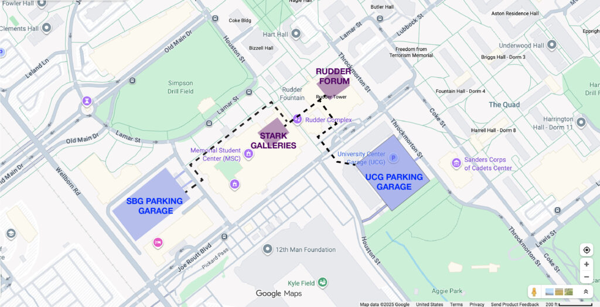
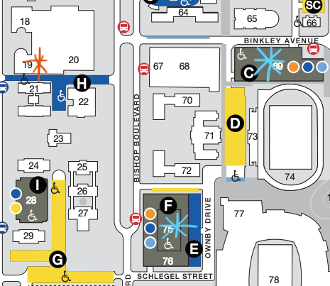

This event marks the public launch of the DWG Project’s web resources and video oral histories for the Texas A&M community and region. The program celebrates the artistic legacy of the Dallas Women’s Co-op (later DW Gallery; DWG) for art students, art educators, and the local arts community.
Program
5:30 opening remarks
5:40 website demo
5:55 video oral history highlight reel
6:10 DWG artist roundtable discussion
6:55 closing remarks
7:00 reception at J Wayne Stark Galleries (adjacent building)
RSVPs appreciated by Friday, November 1 to contact@texasartproject.org.

Parking at Texas A&M
There are two visitor parking garages near to the venue:
– University Center Garage (UCG) (0.2 miles from venue)
– Gene Stallings Blvd Garage (SBG) (0.3 miles from venue)
After 5pm, visitor parking for 3–4 hrs is $5.50. If this is cost prohibitive, please contact Tianna (contact@texasartproject.org).
This event is sponsored by the Melbern G. Glasscock Center for Humanities Research, the University Art Galleries, and the College of Performance, Visualization & Fine Arts, Texas A&M University.
This event marks the public launch of the DWG Project web resources and video oral histories for the DFW community and region . The program celebrates the artistic legacy of the Dallas Women’s Co-op (later DW Gallery; DWG) for archivists, curators, gallerists, and collectors.
Note: this event coincides with an exhibition of DWG ephemera at Hamon Arts Library, curated by DWG artists. Get a glimpse of the DW Gallery’s critical role in the Dallas art scene during the 70s and 80s. Exhibition postcards, newspaper articles, correspondences, and other ephemera tell the tale of this women-led co-op.
5:30 opening remarks
5:40 website demo
5:55 4 x 5-min lightning talks
6:15 break/roundtable set-up
6:30 DWG artist roundtable discussion
7:00 reception begins, with light bites and drinks
RSVPs appreciated by Monday, November 3 to contact@texasartproject.org.
Parking at SMU
Visitor Parking at SMU is available near the Hamon Arts Library at:
– Binkley Parking Garage ($12) off Binkley Ave
– Meadows Visitor Parking (free) off Schlegel
Map excerpt below shows Hamon with an orange asterisk and nearby parking with blue asterisks. Full SMU parking map available here, with visitor parking highlighted in light blue.
